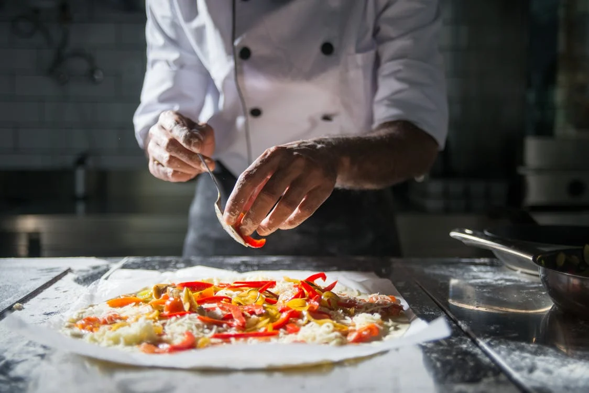
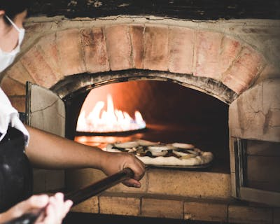
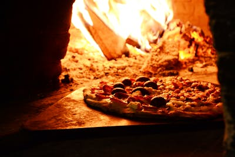
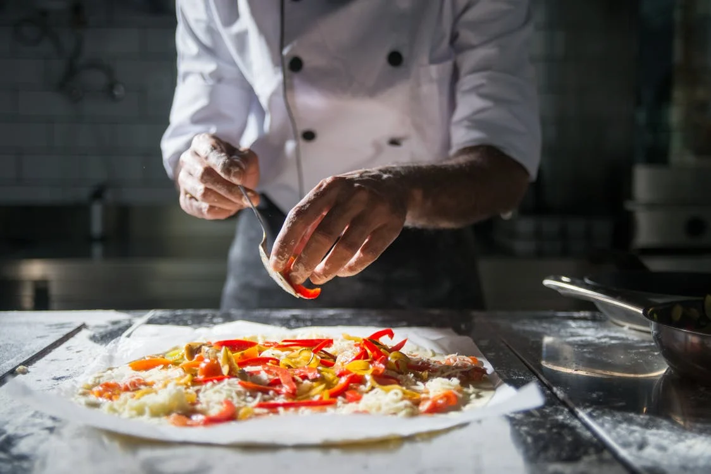
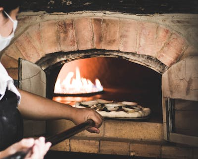
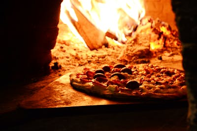

.png)
Sobre Nós
Bem-vindo à nossa casa, onde cada fatia conta uma história e cada aroma te leva direto para a Itália! Somos mais do que uma pizzaria, somos um pedacinho da Itália trazido com carinho para o Brasil. Nosso propósito é oferecer uma verdadeira experiência gastronômica italiana, respeitando as tradições, os sabores autênticos e, acima de tudo, o prazer de compartilhar bons momentos ao redor da mesa.
Nossa Cozinha: o Coração da Pizzaria
Nossa cozinha é o verdadeiro palco onde a mágica acontece. Um ambiente limpo, organizado e cheio de vida, onde tradição e modernidade caminham lado a lado. Cada receita é cuidadosamente elaborada por profissionais apaixonados, que conhecem os segredos da massa perfeita, do molho caseiro e das combinações que fazem cada pizza ser única. Utilizamos ingredientes frescos, selecionados com rigor, muitos deles importados diretamente da Itália. Da mozzarella de búfala ao azeite extravirgem, tudo é escolhido para garantir qualidade e autenticidade. Nossos fornos são os guardiões do sabor, o calor ideal para deixar as bordas crocantes, o centro macio e o sabor inesquecível. E tudo isso pode ser visto! Gostamos de mostrar nosso processo com orgulho, por isso, mostramos transparência, profissionalismo e o amor que colocamos em cada etapa do preparo.
 





Sobre Nossos Vinhos
Para acompanhar sua pizza, oferecemos uma seleção especial de vinhos cuidadosamente escolhidos para harmonizar com nossos sabores autênticos. Nossa carta inclui rótulos nacionais e importados, sempre focando na qualidade e no sabor, para que sua experiência gastronômica seja completa. Além disso, todos os vinhos da casa têm 20% de desconto, proporcionando uma excelente oportunidade para saborear uma combinação perfeita. Venha descobrir nossos vinhos e deixe-se envolver por essa experiência única.
Um Espaço para Todos
Nossa equipe é formada por pessoas apaixonadas pelo que fazem. Acreditamos que comer bem é uma forma de amor, e por isso, nosso atendimento é sempre humano, atencioso e acolhedor. Criamos um espaço confortável, alegre e inclusivo, para todos, sem exceções. Aqui, todos são bem-vindos. Acolhemos cada cliente como parte da nossa grande família. Estamos presentes em Icaraí, São Francisco, Botafogo e Tijuca, sempre prontos para receber você com um sorriso no rosto e uma pizza quentinha saindo do forno. Também oferecemos um sistema de pedidos online rápido e prático: é só informar seu CEP, acessar nosso cardápio digital e finalizar sua compra com o método de pagamento que preferir.
Trabalhe Conosco
Se você compartilha da nossa paixão por gastronomia e busca um ambiente onde o respeito, a dedicação e o crescimento caminham juntos, junte-se a nós! Temos uma área especial no site para que você envie seu currículo, seus dados e nos conte um pouco sobre sua trajetória.
Acessibilidade e Feedback
Nosso site é inclusivo, pensado com recursos de acessibilidade para pessoas com deficiência visual, auditiva, motora, cognitiva e dislexia. Acreditamos que a boa gastronomia deve ser vivida por todos, com conforto e facilidade. E claro, sua opinião é essencial! Na nossa aba de Feedback, você pode avaliar o atendimento, deixar um comentário e nos ajudar a crescer cada dia mais.
Conecte-se com a Gente
Acompanhe nossas redes sociais: WhatsApp, Instagram e LinkedIn, para ficar por dentro de promoções, eventos e curiosidades sobre o nosso universo italiano. Também atendemos por e-mail, telefone e mensagens diretas nas redes. Nossa missão é simples e verdadeira: unir tradição, sabor e acolhimento para criar momentos inesquecíveis. Seja muito bem-vindo à nossa pizzaria. Aqui, cada pedaço é feito com alma italiana e coração brasileiro.